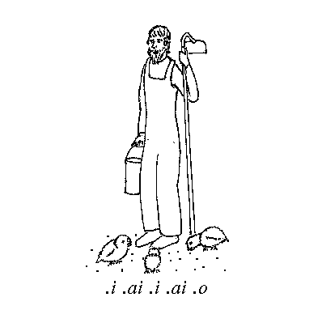

Chapter 3
The Hills Are Alive With The Sounds Of Lojban
1. Orthography
Lojban is designed so that any properly spoken Lojban utterance can be uniquely transcribed in writing, and any properly written Lojban can be spoken so as to be uniquely reproduced by another person. As a consequence, the standard Lojban orthography must assign to each distinct sound, or phoneme, a unique letter or symbol. Each letter or symbol has only one sound or, more accurately, a limited range of sounds that are permitted pronunciations for that phoneme. Some symbols indicate stress (speech emphasis) and pause, which are also essential to Lojban word recognition. In addition, everything that is represented in other languages by punctuation (when written) or by tone of voice (when spoken) is represented in Lojban by words. These two properties together are known technically as ``audio-visual isomorphism''.
Lojban uses a variant of the Latin (Roman) alphabet, consisting of the following letters and symbols:
- ' , . a b c d e f g i j k l m n o p r s t u v x y z
The alphabetic order given above is that of the ASCII coded character set, widely used in computers. By making Lojban alphabetical order the same as ASCII, computerized sorting and searching of Lojban text is facilitated.
Capital letters are used only to represent non-standard stress, which can appear only in the representation of Lojbanized names. Thus the English name ``Josephine'', as normally pronounced, is Lojbanized as ``DJOsefin.'', pronounced [ÈdZo sE fin/]. (See Section 2 for an explanation of the symbols within square brackets.) Technically, it is sufficient to capitalize the vowel letter, in this case ``O'', but it is easier on the reader to capitalize the whole syllable.
Without the capitalization, the ordinary rules of Lojban stress would cause the ``se'' syllable to be stressed. Lojbanized names are meant to represent the pronunciation of names from other languages with as little distortion as may be; as such, they are exempt from many of the regular rules of Lojban phonology, as will appear in the rest of this chapter.
2. Basic Phonetics
Lojban pronunciations are defined using the International Phonetic Alphabet, or IPA, a standard method of transcribing pronunciations. By convention, IPA transcriptions are always within square brackets: for example, the word ``cat'' is pronounced (in General American pronunciation) [kQt]. Section 10 contains a brief explanation of the IPA characters used in this chapter, with their nearest analogues in English, and will be especially useful to those not familiar with the technical terms used in describing speech sounds.
The standard pronunciations and permitted variants of the Lojban letters are listed in the table below. The descriptions have deliberately been made a bit ambiguous to cover variations in pronunciation by speakers of different native languages and dialects. In all cases except ``r'' the first IPA symbol shown represents the preferred pronunciation; for ``r'', all of the variations (and any other rhotic sound) are equally acceptable.
Letter IPA Description
' [h] a unvoiced glottal spirant
, --- the syllable separator
. [/] a glottal stop or a pause
a [a], [A] an open vowel
b [b] a voiced bilabial stop
c [S], [§] an unvoiced coronal sibilant
d [d] a voiced dental/alveolar stop
e [E], [e] a front mid vowel
f [f], [¸] an unvoiced labial fricative
g [g] a voiced velar stop
i [i] a front close vowel
j [Z],[½] a voiced coronal sibilant
k [k] an unvoiced velar stop
l [l], [l`] a voiced lateral approximant
(may be syllabic)
m [m], [m`] a voiced bilabial nasal
(may be syllabic)
n [n], [n`], a voiced dental or velar nasal
[N], [N`] (may be syllabic)
o [o], [] a back mid vowel
p [p] an unvoiced bilabial stop
r [r], [¨], [R], [{], a rhotic sound
[r`], [¨`], [R`], [{`]
s [s] an unvoiced alveolar sibilant
t [t] an unvoiced dental/alveolar stop
u [u] a back close vowel
v [v], [B] a voiced labial fricative
x [x] an unvoiced velar fricative
y [«] a central mid vowel
z [z] a voiced alveolar sibilant
The Lojban sounds must be clearly pronounced so that they are
not mistaken for each other. Voicing and placement of the
tongue are the key factors in correct pronunciation, but other
subtle differences will develop between consonants in a
Lojban-speaking community. At this point these are the only
mandatory rules on the range of sounds.
Note in particular that Lojban vowels can be pronounced with either rounded or unrounded lips; typically ``o'' and ``u'' are rounded and the others are not, as in English, but this is not a requirement; some people round ``y'' as well. Lojban consonants can be aspirated or unaspirated. Palatalizing of consonants, as found in Russian and other languages, is not generally acceptable in pronunciation, though a following ``i'' may cause it.
The sounds represented by the letters ``c'', ``g'', ``j'', ``s'', and ``x'' require special attention for speakers of English, either because they are ambiguous in the orthography of English (``c'', ``g'', ``s''), or because they are strikingly different in Lojban (``c'', ``j'', ``x''). The English ``c'' represents three different sounds, [k] in ``cat'' and [s] in ``cent'', as well as the [S] of ``ocean''. Similarly, English ``g'' can represent [g] as in ``go'', [dZ] as in ``gentle'', and [Z] as in ``garage'' (in some pronunciations). English ``s'' can be either [s] as in ``cats'', [z] as in ``cards'', [S] as in ``tension'', or [Z] as in ``measure''. The sound of Lojban ``x'' doesn't appear in most English dialects at all.
There are two common English sounds that are found in Lojban but are not not Lojban consonants: the ``ch'' of ``church'' and the ``j'' of ``judge''. In Lojban, these are considered two consonant sounds spoken together without an intervening vowel sound, and so are represented in Lojban by the two separate consonants: ``tc'' (IPA [tS]) and ``dj'' (IPA [dZ]). In general, whether a complex sound is considered one sound or two depends on the language: Russian views ``ts'' as a single sound, whereas English, French, and Lojban consider it to be a consonant cluster.
3. The Special Lojban Characters
The apostrophe, period, and comma need special attention. They are all used as indicators of a division between syllables, but each has a different pronunciation, and each is used for different reasons:
The apostrophe represents a phoneme similar to a short, breathy English ``h'', (IPA [h]). The letter ``h'' is not used to represent this sound for two reasons: primarily in order to simplify explanations of the morphology, but also because the sound is very common, and the apostrophe is a visually lightweight representation of it. The apostrophe sound is a consonant in nature, but is not treated as either a consonant or a vowel for purposes of Lojban morphology (word-formation), which is explained in Chapter 4. In addition, the apostrophe visually parallels the comma and the period, which are also used (in different ways) to separate syllables.
The apostrophe is included in Lojban only to enable a smooth separation between vowels, while joining the vowels within a single word. In fact, one way to think of the apostrophe is as representing a unvoiced vowel glide.
As a permitted variant, any unvoiced fricative other than those already used in Lojban may be used to render the apostrophe: IPA [T] is one possibility. The convenience of the listener should be regarded as paramount in deciding to use a substitute for [h].
The period represents a mandatory pause, with no specified length; a glottal stop (IPA [/]) is considered a pause of shortest length. A pause (or glottal stop) may appear between any two words, and in certain cases -- explained in detail in Chapter 4 --- must occur. In particular, a word beginning with a vowel is always preceded by a pause, and a word ending in a consonant is always followed by a pause.
Technically, the period is an optional reminder to the reader of a mandatory pause that is dictated by the rules of the language; because these rules are unambiguous, a missing period can be inferred from otherwise correct text. Periods are included only as an aid to the reader.
A period also may be found apparently embedded in a word. When this occurs, such a written string is not one word but two, written together to indicate that the writer intends a unitary meaning for the compound. It is not really necessary to use a space between words if a period appears.
The comma is used to indicate a syllable break within a word, generally one that is not obvious to the reader. Such a comma is written to separate syllables, but indicates that there must be no pause between them, in contrast to the period. Between two vowels, a comma indicates that some type of glide may be necessary to avoid a pause that would split the two syllables into separate words. It is always legal to use the apostrophe (IPA [h]) sound in pronouncing a comma. However, a comma cannot be pronounced as a pause or glottal stop between the two letters separated by the comma, because that pronunciation would split the word into two words.
Otherwise, a comma is usually only used to clarify the presence of syllabic ``l'', ``m'', ``n'', or ``r'' (discussed later). Commas are never required: no two Lojban words differ solely because of the presence or placement of a comma.
Here is a somewhat artificial example of the difference in pronunciation between periods, commas and apostrophes. In the English song about Old MacDonald's Farm, the vowel string which is pronounced ``ee-i-ee-i-o'' in English could be Lojbanized with periods as:
3.1) .i.ai.i.ai.o [/i /aj /i /aj /o] Ee! Eye! Ee! Eye! Oh!
However, this would sound clipped, staccato, and unmusical compared to the English. Furthermore, although Example 3.1 is a string of meaningful Lojban words, as a sentence it makes very little sense. (Note the use of periods embedded within the written word.)
If commas were used instead of periods, we could represent the English string as a Lojbanized name, ending in a consonant:
3.2) .i,ai,i,ai,on. [/i jaj ji jaj jon/]
The commas represent new syllable breaks, but prohibit the use of pauses or glottal stop. The pronunciation shown is just one possibility, but closely parallels the intended English pronunciation.
However, the use of commas in this way is risky to unambiguous interpretation, since the glides might be heard by some listeners as diphthongs, producing something like
3.3) .i,iai,ii,iai,ion.which is technically a different Lojban name. Since the intent with Lojbanized names is to allow them to be pronounced more like their native counterparts, the comma is allowed to represent vowel glides or some non-Lojbanic sound. Such an exception affects only spelling accuracy and the ability of a reader to replicate the desired pronunciation exactly; it will not affect the recognition of word boundaries.
Still, it is better if Lojbanized names are always distinct. Therefore, the apostrophe is preferred in regular Lojbanized names that are not attempting to simulate a non-Lojban pronunciation perfectly. (Perfection, in any event, is not really achievable, because some sounds simply lack reasonable Lojbanic counterparts.)
If apostrophes were used instead of commas in Example 3.2, it would appear as:
3.4) .i'ai'i'ai'on. [/i hai hi hai hon/]which preserves the rhythm and length, if not the exact sounds, of the original English.
4. Diphthongs and Syllabic Consonants
There exist 16 diphthongs in the Lojban language. A diphthong is a vowel sound that consists of two elements, a short vowel sound and a glide, either a labial (IPA [w]) or palatal (IPA [j]) glide, that either precedes (an on-glide) or follows (an off-glide) the main vowel. Diphthongs always constitute a single syllable.
For Lojban purposes, a vowel sound is a relatively long speech-sound that forms the nucleus of a syllable. Consonant sounds are relatively brief and normally require an accompanying vowel sound in order to be audible. Consonants may occur at the beginning or end of a syllable, around the vowel, and there may be several consonants in a cluster in either position. Each separate vowel sound constitutes a distinct syllable; consonant sounds do not affect the determination of syllables.
The six Lojban vowels are ``a'', ``e'', ``i'', ``o'', ``u'', and ``y''. The first five vowels appear freely in all kinds of Lojban words. The vowel ``y'' has a limited distribution: it appears only in Lojbanized names, in the Lojban names of the letters of the alphabet, as a glue vowel in compound words, and standing alone as a space-filler word (like English ``uh'' or ``er'').
The Lojban diphthongs are shown in the table below. (Variant pronunciations have been omitted, but are much as one would expect based on the variant pronunciations of the separate vowel letters: ``ai'' may be pronounced [Aj], for example.)
Letters IPA Description
ai [aj] an open vowel
with palatal off-glide
ei [Ej] a front mid vowel
with palatal off-glide
oi [oj] a back mid vowel
with palatal off-glide
au [aw] an open vowel
with labial off-glide
ia [ja] an open vowel
with palatal on-glide
ie [jE] a front mid vowel
with palatal on-glide
ii [ji] a front close vowel
with palatal on-glide
io [jo] a back mid vowel
with palatal on-glide
iu [ju] a back close vowel
with palatal on-glide
ua [wa] an open vowel
with labial on-glide
ue [wE] a front mid vowel
with labial on-glide
ui [wi] a front close vowel
with labial on-glide
uo [wo] a back mid vowel
with labial on-glide
uu [wu] a back close vowel
with labial on-glide
iy [j«] a central mid vowel
with palatal on-glide
uy [w«] a central mid vowel
with labial on-glide
(Approximate English equivalents of most of these diphthongs
exist: see Section 11 for examples.)
The first four diphthongs above (``ai'', ``ei'', ``oi'', and ``au'', the ones with off-glides) are freely used in most types of Lojban words; the ten following ones are used only as stand-alone words and in Lojbanized names and borrowings; and the last two (``iy'' and ``uy'') are used only in Lojbanized names.
The syllabic consonants of Lojban, [l`], [m`], [n`], and [r`], are variants of the non-syllabic [l], [m], [n], and [r] respectively. They normally have only a limited distribution, appearing in Lojban names and borrowings, although in principle any ``l'', ``m'', ``n'', or ``r'' may be pronounced syllabically. If a syllabic consonant appears next to a ``l'', ``m'', ``n'', or ``r'' that is not syllabic, it may not be clear which is which:
4.1) brlgan. [br`l gan] or [brl` gan]is a hypothetical Lojbanized name with more than one valid pronunciation; however it is pronounced, it remains the same word.
Syllabic consonants are treated as consonants rather than vowels from the standpoint of Lojban morphology. Thus Lojbanized names, which are generally required to end in a consonant, are allowed to end with a syllabic consonant. An example is ``rl.'', which is an approximation of the English name ``Earl'', and has two syllabic consonants.
Syllables with syllabic consonants and no vowel are never stressed or counted when determining which syllables to stress (see Section 9).
5. Vowel Pairs
Lojban vowels also occur in pairs, where each vowel sound is in a separate syllable. These two vowel sounds are connected (and separated) by an apostrophe. Lojban vowel pairs should be pronounced continuously with the [h] sound between (and not by a glottal stop or pause, which would split the two vowels into separate words).
All vowel combinations are permitted in two-syllable pairs with the apostrophe separating them; this includes those which constitute diphthongs when the apostrophe is not included.
The Lojban vowel pairs are:
a'a a'e a'i a'o a'u a'y
e'a e'e e'i e'o e'u e'y
i'a i'e i'i i'o i'u i'y
o'a o'e o'i o'o o'u o'y
u'a u'e u'i u'o u'u u'y
y'a y'e y'i y'o y'u y'y
Vowel pairs involving ``y'' appear only in Lojbanized names.
They could appear in cmavo (structure words), but only
``.y'y.'' is so used --- it is the Lojban name of the
apostrophe letter (see Chapter 17).
When more than two vowels occur together in Lojban, the normal pronunciation pairs vowels from the left into syllables, as in the Lojbanized name:
5.1) meiin. mei,in.Example 5.1 contains the diphthong ``ei'' followed by the vowel ``i''. In order to indicate a different grouping, the comma must always be used, leading to:
5.2) me,iin.which contains the vowel ``e'' followed by the diphthong ``ii''. In rough English representation, Example 5.1 is ``May Een'', whereas Example 5.2 is ``Meh Yeen''.
6. Consonant Clusters
A consonant sound is a relatively brief speech-sound that precedes or follows a vowel sound in a syllable; its presence either preceding or following does not add to the count of syllables, nor is a consonant required in either position for any syllable. Lojban has seventeen consonants: for the purposes of this section, the apostrophe is not counted as a consonant.
An important distinction dividing Lojban consonants is that of voicing. The following table shows the unvoiced consonants and the corresponding voiced ones:
UNVOICED VOICED
p b
t d
k g
f v
c j
s z
x -
The consonant ``x'' has no voiced counterpart in Lojban. The remaining consonants, ``l'', ``m'', ``n'', and ``r'', are typically pronounced with voice, but can be pronounced unvoiced.
Consonant sounds occur in languages as single consonants, or as doubled, or as clustered combinations. Single consonant sounds are isolated by word boundaries or by intervening vowel sounds from other consonant sounds. Doubled consonant sounds are either lengthened like [s] in English ``hiss'', or repeated like [k] in English ``backcourt''. Consonant clusters consist of two or more single or doubled consonant sounds in a group, each of which is different from its immediate neighbor. In Lojban, doubled consonants are excluded altogether, and clusters are limited to two or three members, except in Lojbanized names.
Consonants can occur in three positions in words: initial (at the beginning), medial (in the middle), and final (at the end). In many languages, the sound of a consonant varies depending upon its position in the word. In Lojban, as much as possible, the sound of a consonant is unrelated to its position. In particular, the common American English trait of changing a ``t'' between vowels into a ``d'' or even a flap (IPA [¨]) is unacceptable in Lojban.
Lojban imposes no restrictions on the appearance of single consonants in any valid consonant position; however, no consonant (including syllabic consonants) occurs final in a word except in Lojbanized names.
Pairs of consonants can also appear freely, with the following restrictions:
- 1)
- It is forbidden for both consonants to be the same, as this would violate the rule against double consonants.
- 2)
- It is forbidden for one consonant to be voiced and the other unvoiced. The consonants ``l'', ``m'', ``n'', and ``r'' are exempt from this restriction. As a result, ``bf'' is forbidden, and so is ``sd'', but both ``fl'' and ``vl'', and both ``ls'' and ``lz'', are permitted.
- 3)
- It is forbidden for both consonants to be drawn from the set ``c'', ``j'', ``s'', ``z''.
- 4)
- The specific pairs ``cx'', ``kx'', ``xc'', ``xk'', and ``mz'' are forbidden.
6.1) djeimyz. [dZEj m«z/] James
The regular English pronunciation of ``James'', which is [dZEjmz], would Lojbanize as ``djeimz.'', which contains a forbidden consonant pair.
7. Initial Consonant Pairs
The set of consonant pairs that may appear at the beginning of a word (excluding Lojbanized names) is far more restricted than the fairly large group of permissible consonant pairs described in Section 6. Even so, it is more than English allows, although hopefully not more than English-speakers (and others) can learn to pronounce.
There are just 48 such permissible initial consonant pairs, as follows:
- bl br cf ck cl cm cn cp cr ct dj dr dz fl fr gl gr jb jd jg jm jv kl kr ml mr pl pr sf sk sl sm sn sp sr st tc tr ts vl vr xl xr zb zd zg zm zv
Lest this list seem almost random, a pairing of voiced and unvoiced equivalent vowels will show significant patterns which may help in learning:
pl pr fl fr
bl br vl vr
cp cf ct ck cm cn cl cr
jb jv jd jg jm
sp sf st sk sm sn sl sr
zb zv zd zg zm
tc tr ts kl kr
dj dr dz gl gr
ml mr xl xr
Note that if both consonants of an initial pair are voiced, the
unvoiced equivalent is also permissible, and the voiced pair
can be pronounced simply by voicing the unvoiced pair. (The
converse is not true: ``cn'' is a permissible initial pair, but
``jn'' is not.)
Consonant triples can occur medially in Lojban words. They are subject to the following rules:
- 1)
- The first two consonants must constitute a permissible consonant pair;
- 2)
- The last two consonants must constitute a permissible initial consonant pair;
- 3)
- The triples ``ndj'', ``ndz'', ``ntc'', and ``nts'' are forbidden.
8. Buffering Of Consonant Clusters
Many languages do not have consonant clusters at all, and even those languages that do have them often allow only a subset of the full Lojban set. As a result, the Lojban design allows the use of a buffer sound between consonant combinations which a speaker finds unpronounceable. This sound may be any non-Lojbanic vowel which is clearly separable by the listener from the Lojban vowels. Some possibilities are IPA [I], [ö], [U], or even [Y], but there probably is no universally acceptable buffer sound. When using a consonant buffer, the sound should be made as short as possible. Two examples showing such buffering (we will use [I] in this chapter) are:
8.1) vrusi [Èvru si] or [vI Èru si]
8.2) .AMsterdam. [/am ster dam/] or [È/a mI sI tE rI da mI/]When a buffer vowel is used, it splits each buffered consonant into its own syllable. However, the buffering syllables are never stressed, and are not counted in determining stress. They are, in effect, not really syllables to a Lojban listener, and thus their impact is ignored.
Here are more examples of unbuffered and buffered pronunciations:
8.3) klama [Èkla ma] [kI Èla ma] 8.4) xapcke [Èxap ckE] [Èxa pI ckE] [Èxa pI cI kE]
In Example 8.4, we see that buffering vowels can be used in just some, rather than all, of the possible places: the second pronunciation buffers the ``pc'' consonant pair but not the ``ck''. The third pronunciation buffers both.
8.5) ponyni'u [po n« Èni hu]Example 8.5 cannot contain any buffering vowel. It is important not to confuse the vowel ``y'', which is pronounced [«], with the buffer, which has a variety of possible pronunciations and is never written. Consider the contrast between
8.6) bongynanba [boN g« Ènan ba]an unlikely Lojban compound word meaning ``bone bread'' (note the use of [N] as a representative of ``n'' before ``g'') and
8.7) bongnanba [boN Ègnan ba]a possible borrowing from another language (Lojban borrowings can only take a limited form). If Example 8.7 were pronounced with buffering, as
8.8) [boN gI Ènan ba]it would be very similar to Example 8.6. Only a clear distinction between ``y'' and any buffering vowel would keep the two words distinct.
Since buffering is done for the benefit of the speaker in order to aid pronounceability, there is no guarantee that the listener will not mistake a buffer vowel for one of the six regular Lojban vowels. The buffer vowel should be as laxly pronounced as possible, as central as possible, and as short as possible. Furthermore, it is worthwhile for speakers who use buffers to pronounce their regular vowels a bit longer than usual, to avoid confusion with buffer vowels. The speakers of many languages will have trouble correctly hearing any of the suggested buffer vowels otherwise. By this guideline, Example 8.8 would be pronounced
8.9) [boùN gI Ènaùn baù]with lengthened vowels.
9. Syllabication And Stress
A Lojban word has one syllable for each of its vowels, diphthongs, and syllabic consonants (referred to simply as ``vowels'' for the purposes of this section.) Syllabication rules determine which of the consonants separating two vowels belong to the preceding vowel and which to the following vowel. These rules are conventional only; the phonetic facts of the matter about how utterances are syllabified in any language are always very complex.
A single consonant always belongs to the following vowel. A consonant pair is normally divided between the two vowels; however, if the pair constitute a valid initial consonant pair, they are normally both assigned to the following vowel. A consonant triple is divided between the first and second consonants. Apostrophes and commas, of course, also represent syllable breaks. Syllabic consonants usually appear alone in their syllables.
It is permissible to vary from these rules in Lojbanized names. For example, there are no definitive rules for the syllabication of names with consonant clusters longer than three consonants. The comma is used to indicate variant syllabication or to explicitly mark normal syllabication.
Here are some examples of Lojban syllabication:
9.1) pujenaicajeba pu,je,nai,ca,je,ba
This word has no consonant pairs and is therefore syllabified before each medial consonant.
9.2) ninmu nin,mu
This word is split at a consonant pair.
9.3) fitpri fit,pri
This word is split at a consonant triple, between the first two consonants of the triple.
9.4) sairgoi sair,goi sai,r,goi
This word contains the consonant pair ``rg''; the ``r'' may be pronounced syllabically or not.
9.5) klezba klez,ba kle,zba
This word contains the permissible initial pair ``zb'', and so may be syllabicated either between ``z'' and ``b'' or before ``zb''.
Stress is a relatively louder pronunciation of one syllable in a word or group of words. Since every syllable has a vowel sound (or diphthong or syllabic consonant) as its nucleus, and the stress is on the vowel sound itself, the terms ``stressed syllable'' and ``stressed vowel'' are largely interchangeable concepts.
Most Lojban words are stressed on the next-to-the-last, or penultimate, syllable. In counting syllables, however, syllables whose vowel is ``y'' or which contain a syllabic consonant (``l'', ``m'', ``n'', or ``r'') are never counted. (The Lojban term for penultimate stress is ``da'amoi terbasna''.) Similarly, syllables created solely by adding a buffer vowel, such as [I], are not counted.
There are actually three levels of stress --- primary, secondary, and weak. Weak stress is the lowest level, so it really means no stress at all. Weak stress is required for syllables containing ``y'', a syllabic consonant, or a buffer vowel.
Primary stress is required on the penultimate syllable of Lojban content words (called ``brivla''). Lojbanized names may be stressed on any syllable, but if a syllable other than the penultimate is stressed, the syllable (or at least its vowel) must be capitalized in writing. Lojban structural words (called ``cmavo'') may be stressed on any syllable or none at all. However, primary stress may not be used in a syllable just preceding a brivla, unless a pause divides them; otherwise, the two words may run together.
Secondary stress is the optional and non-distinctive emphasis used for other syllables besides those required to have either weak or primary stress. There are few rules governing secondary stress, which typically will follow a speaker's native language habits or preferences. Secondary stress can be used for contrast, or for emphasis of a point. Secondary stress can be emphasized at any level up to primary stress, although the speaker must not allow a false primary stress in brivla, since errors in word resolution could result.
The following are Lojban words with stress explicitly shown:
9.6) dikyjvo DI,ky,jvo(In a fully-buffered dialect, the pronunciation would be: [Èdi k« jI vo].) Note that the syllable ``ky'' is not counted in determining stress. The vowel ``y'' is never stressed in a normal Lojban context.
9.7) .armstrong. .ARM,strong.
This is a Lojbanized version of the name ``Armstrong''. The final ``g'' must be explicitly pronounced. With full buffering, the name would be pronounced:
9.8) [È/a rI mI sI tI ro nI gI/]
However, there is no need to insert a buffer in every possible place just because it is inserted in one place: partial buffering is also acceptable. In every case, however, the stress remains in the same place: on the first syllable.
The English pronunciation of ``Armstrong'', as spelled in English, is not correct by Lojban standards; the letters ``ng'' in English represent a velar nasal (IPA [N]) which is a single consonant. In Lojban, ``ng'' represents two separate consonants that must both be pronounced; you may not use [N] to pronounce Lojban ``ng'', although [Ng] is acceptable. English speakers are likely to have to pronounce the ending with a buffer, as one of the following:
9.9) [È/arm stron gI/] or [È/arm stroN gI/] or even [È/arm stro nIg/]
The normal English pronunciation of the name ``Armstrong'' could be Lojbanized as:
9.10) .ARMstron.since Lojban ``n'' is allowed to be pronounced as the velar nasal [N].
Here is another example showing the use of ``y'':
9.11) bisydja BI,sy,dja BI,syd,ja
This word is a compound word, or lujvo, built from the two affixes ``bis'' and ``dja''. When they are joined, an impermissible consonant pair results: ``sd''. In accordance with the algorithm for making lujvo, explained in Chapter 4, a ``y'' is inserted to separate the impermissible consonant pair; the ``y'' is not counted as a syllable for purposes of stress determination.
9.12) da'udja da'UD,ja da'U,dja
These two syllabications sound the same to a Lojban listener --- the association of unbuffered consonants in syllables is of no import in recognizing the word.
9.13) e'u bridi e'u BRI,di E'u BRI,di e'U.BRI,di
In Example 9.13, ``e'u'' is a cmavo and ``bridi'' is a brivla. Either of the first two pronunciations is permitted: no primary stress on either syllable of ``e'u'', or primary stress on the first syllable. The third pronunciation, which places primary stress on the second syllable of the cmavo, requires that --- since the following word is a brivla --- the two words must be separated by a pause. Consider the following two cases:
9.14) le re nobli prenu le re NObli PREnu 9.15) le re no bliprenu le re no bliPREnu
If the cmavo ``no'' in Example 9.15 were to be stressed, the phrase would sound exactly like the given pronunciation of Example 9.14, which is unacceptable in Lojban: a single pronunciation cannot represent both.
10. IPA For English Speakers
There are many dialects of English, thus making it difficult to define the standardized symbols of the IPA in terms useful to every reader. All the symbols used in this chapter are repeated here, in more or less alphabetical order, with examples drawn from General American. In addition, some attention is given to the Received Pronunciation of (British) English. These two dialects are referred to as GA and RP respectively. Speakers of other dialects should consult a book on phonetics or their local television sets.
- [È]
- An IPA indicator of primary stress; the syllable which follows [È] receives primary stress.
- [/]
- An allowed variant of Lojban ``.''. This sound is not usually considered part of English. It is the catch in your throat that sometimes occurs prior to the beginning of a word (and sometimes a syllable) which starts with a vowel. In some dialects, like Cockney and some kinds of American English, it is used between vowels instead of ``t'': ``bottle'' [bo/l`]. The English interjection ``uh-oh!'' almost always has it between the syllables.
- [ù]
- A symbol indicating that the previous vowel is to be spoken for a longer time than usual. Lojban vowels can be pronounced long in order to make a greater contrast with buffer vowels.
- [a]
- The preferred pronunciation of Lojban ``a''. This sound doesn't occur in GA, but sounds somewhat like the ``ar'' of ``park'', as spoken in RP or New England American. It is pronounced further forward in the mouth than [A].
- [A]
- An allowed variant of Lojban ``a''. The ``a'' of GA ``father''. The sound [a] is preferred because GA speakers often relax an unstressed [A] into a schwa [«], as in the usual pronunciations of ``about'' and ``sofa''. Because schwa is a distinct vowel in Lojban, English speakers must either learn to avoid this shift or to use [a] instead: the Lojban word for ``sofa'' is ``sfofa'', pronounced [sfofa] or [sfofA] but never [sfof«] which would be the non-word ``sfofy''.
- [Q]
- Not a Lojban sound. The ``a'' of English ``cat''.
- [b]
- The preferred pronunciation of Lojban ``b''. As in English ``boy'', ``sober'', or ``job''.
- [B]
- An allowed variant of Lojban ``v''. Not an English sound; the Spanish ``b'' or ``v'' between vowels. This sound should not be used for Lojban ``b''.
- [d]
- The preferred pronunciation of Lojban ``d''. As in English ``dog'', ``soda'', or ``mad''.
- [E]
- The preferred pronunciation of Lojban ``e''. The ``e'' of English ``met''.
- [e]
- An allowed variant of Lojban ``e''. This sound is not found in English, but is the Spanish ``e'', or the tense ``e'' of Italian. The vowel of English ``say'' is similar except for the off-glide: you can learn to make this sound by holding your tongue steady while saying the first part of the English vowel.
- [«]
- The preferred pronunciation of Lojban ``y''. As in the ``a'' of English ``sofa'' or ``about''. Schwa is generally unstressed in Lojban, as it is in English. It is a totally relaxed sound made with the tongue in the middle of the mouth.
- [f]
- The preferred pronunciation of Lojban ``f''. As in ``fee'', ``loafer'', or ``chef''.
- [¸]
- An allowed variant of Lojban ``f''. Not an English sound; the Japanese ``f'' sound.
- [g]
- The preferred pronunciation of Lojban ``g''. As in English ``go'', ``eagle'', or ``dog''.
- [h]
- The preferred pronunciation of the Lojban apostrophe sound. As in English ``aha'' or ``oh, hello''.
- [i]
- The preferred pronunciation of Lojban ``i''. Essentially like the English vowel of ``pizza'' or ``machine'', although the English vowel is sometimes pronounced with an off-glide, which should not be present in Lojban.
- [I]
- A possible Lojban buffer vowel. The ``i'' of English ``bit''.
- [ö]
- A possible Lojban buffer vowel. The ``u'' of ``just'' in some varieties of GA, those which make the word sound more or less like ``jist''. Also Russian ``y'' as in ``byt''' (to be); like a schwa [«], but higher in the mouth.
- [j]
- Used in Lojban diphthongs beginning or ending with ``i''. Like the ``y'' in English ``yard'' or ``say''.
- [k]
- The preferred pronunciation of Lojban ``k''. As in English ``kill'', ``token'', or ``flak''.
- [l]
- The preferred pronunciation of Lojban ``l''. As in English ``low'', ``nylon'', or ``excel''.
- [l`]
- The syllabic version of Lojban ``l'', as in English ``bottle'' or ``middle''.
- [m]
- The preferred pronunciation of Lojban ``m''. As in English ``me'', ``humor'', or ``ham''.
- [m`]
- The syllabic version of Lojban ``m''. As in English ``catch 'em'' or ``bottom''.
- [n]
- The preferred pronunciation of Lojban ``n''. As in English ``no'', ``honor'', or ``son''.
- [n`]
- The syllabic version of Lojban ``n''. As in English ``button''.
- [N]
- An allowed variant of Lojban ``n'', especially in Lojbanized names and before ``g'' or ``k''. As in English ``sing'' or ``singer'' (but not ``finger'' or ``danger'').
- [N`]
- An allowed variant of Lojban syllabic ``n'', especially in Lojbanized names.
- [o]
- The preferred pronunciation of Lojban ``o''. As in the French ``haute (cuisine)'' or Spanish ``como''. There is no exact English equivalent of this sound. The nearest GA equivalent is the ``o'' of ``dough'' or ``joke'', but it is essential that the off-glide (a [w]-like sound) at the end of the vowel is not pronounced when speaking Lojban. The RP sound in these words is [«w] in IPA terms, and has no [o] in it at all; unless you can speak with a Scots, Irish, or American accent, you may have trouble with this sound.
- []
- An allowed variant of Lojban ``o'', especially before ``r''. This sound is a shortened form of the ``aw'' in GA ``dawn'' (for those people who don't pronounce ``dawn'' and ``Don'' alike; if you do, you may have trouble with this sound). In RP, but not GA, it is the ``o'' of ``hot''.
- [p]
- The preferred pronunciation of Lojban ``p''. As in English ``pay'', ``super'', or ``up''.
- [r]
- One version of Lojban ``r''. Not an English sound. The Spanish ``rr'' and the Scots ``r'', a tongue-tip trill.
- [¨]
- One version of Lojban ``r''. As in GA ``right'', ``baron'', or ``car''. Not found in RP.
- [R]
- One version of Lojban ``r''. In GA, appears as a variant of ``t'' or ``d'' in the words ``metal'' and ``medal'' respectively. A tongue-tip flap. [{] One version of Lojban ``r''. Not an English sound. The French or German ``r'' in ``reine'' or ``rot'' respectively. A uvular trill.
- [r`], [¨`], [R`], [{`] are syllabic versions of the above. [¨`] appears in the GA (but not RP) pronunciation of ``bird''.
- [s]
- The preferred pronunciation of Lojban ``s''. As in English ``so'', ``basin'', or ``yes''.
- [S]
- The preferred pronunciation of Lojban ``c''. The ``sh'' of English ``ship'', ``ashen'', or ``dish''.
- [§]
- An allowed variant of Lojban ``s''. Not an English sound. The Hindi retroflex ``s'' with underdot, or Klingon ``S''.
- [t]
- The preferred pronunciation of Lojban ``t''. As in English ``tea'', ``later'', or ``not''. It is important to avoid the GA habit of pronouncing the ``t'' between vowels as [d] or [R].
- [T]
- Not normally a Lojban sound, but a possible variant of Lojban ``'''. The ``th'' of English ``thin'' (but not ``then'').
- [v]
- The preferred pronunciation of Lojban ``v''. As in English ``voice'', ``savor'', or ``live''.
- [w]
- Used in Lojban diphthongs beginning or ending with ``u''. Like the ``w'' in English ``wet'' [wEt] or ``cow'' [kAw].
- [x]
- The preferred pronunciation of Lojban ``x''. Not normally an English sound, but used in some pronunciations of ``loch'' and ``Bach''; ``gh'' in Scots ``might'' and ``night''. The German ``Ach-Laut''. To pronounce [x], force air through your throat without vibrating your vocal chords; there should be lots of scrape.
- [Y]
- A possible Lojban buffer vowel. Not an English sound: the ``ü'' of German ``hübsch''.
- [z]
- The preferred pronunciation of Lojban ``z''. As in English ``zoo'', ``hazard'', or ``fizz''.
- [Z]
- The preferred pronunciation of Lojban ``j''. The ``si'' of English ``vision'', or the consonant at the end of GA ``garage''.
- [½]
- An allowed variant of Lojban ``z''. Not an English sound. The voiced version of [§].
11. English Analogues For Lojban Diphthongs
Here is a list of English words that contain diphthongs that are similar to the Lojban diphthongs. This list does not constitute an official pronunciation guide; it is intended as a help to English-speakers.
Lojban English
ai ``pie''
ei ``pay''
oi ``boy''
au ``cow''
ia ``yard''
ie ``yes''
ii ``ye''
io ``yodel'' (in GA only)
iu ``unicorn'' or ``few''
ua ``suave''
ue ``wet''
ui ``we''
uo ``woe'' (in GA only)
uu ``woo''
iy ``million'' (the ``io'' part, that is)
uy ``was'' (when unstressed)
12. Oddball Orthographies
The following notes describe ways in which Lojban has been written or could be written that differ from the standard orthography explained in the rest of this chapter. Nobody needs to read this section except people with an interest in the obscure. Technicalities are used without explanation or further apology.
There exists an alternative orthography for Lojban, which is designed to be as compatible as possible (but no more so) with the authority used in pre-Lojban versions of Loglan. The consonants undergo no change, except that ``x'' is replaced by ``h''. The individual vowels likewise remain unchanged. However, the vowel pairs and diphthongs are changed as follows:
- ``ai'', ``ei'', ``oi'', ``au'' become ``ai'', ``ei'', ``oi'', ``ao''.
- ``ia'' through ``iu'' and ``ua'' through ``uu'' remain unchanged.
- ``a'i'', ``e'i'', ``o'i'' and ``a'o'' become ``a,i'', ``e,i'', ``o,i'' and ``a,o''.
- ``i'a'' through ``i'u'' and ``u'a'' through ``u'u'' are changed to ``ia'' through ``iu'' and ``ua'' through ``uu'' in lujvo and cmavo other than attitudinals, but become ``i,a'' through ``i,u'' and ``u,a'' through ``u,u'' in names, fu'ivla, and attitudinal cmavo.
- All other vowel pairs simply drop the apostrophe.
The result of these rules is to eliminate the apostrophe altogether, replacing it with comma where necessary, and otherwise with nothing. In addition, names and the cmavo ``.i'' are capitalized, and irregular stress is marked with an apostrophe (now no longer used for a sound) following the stressed syllable.
Three points must be emphasized about this alternative orthography:
- It is not standard, and has not been used.
- It does not represent any changes to the standard Lojban phonology; it is simply a representation of the same phonology using a different written form.
- It was designed to aid in a planned rapprochement between the Logical Language Group and The Loglan Institute, a group headed by James Cooke Brown. The rapprochement never took place.
Finally, an orthography using the Tengwar of Féanor, a fictional orthography invented by J. R. R. Tolkien and described in the Appendixes to The Lord Of The Rings, has been devised for Lojban. The following mapping, which closely resembles that used for Westron, will be meaningful only to those who have read those appendixes. In brief, the tincotéma and parmatéma are used in the conventional ways; the calmatéma represents palatal consonants, and the quessetéma represents velar consonants.
t tinco p parma
- calma k quesse
d ando b umbar
- anga g ungwe
- thule f formen
c harma x hwesta
- anto v ampa
j anca - unque
n numen m malta
- noldo - nwalme
r ore u vala
i anna - vilya
The letters ``vala'' and ``anna'' are used for ``u'' and ``i'' only when those letters are used to represent glides. Of the additional letters, ``r'', ``l'', ``s'', and ``z'' are written with ``rómen'', ``lambe'', ``silme'', and ``áre/``esse'' respectively; the inverted forms are used as free variants.
Lojban, like Quenya, is a vowel-last language, so tehtar are read as following the tengwar on which they are placed. The conventional tehtar are used for the five regular vowels, and the under-dot for ``y''. The Lojban apostrophe is represented by ``halla''. There is no equivalent of the Lojban comma or period.
Last modified: Thu Oct 24 16:02:46 PDT 2002.
Please e-mail webmaster@lojban.org with any comments or concerns.